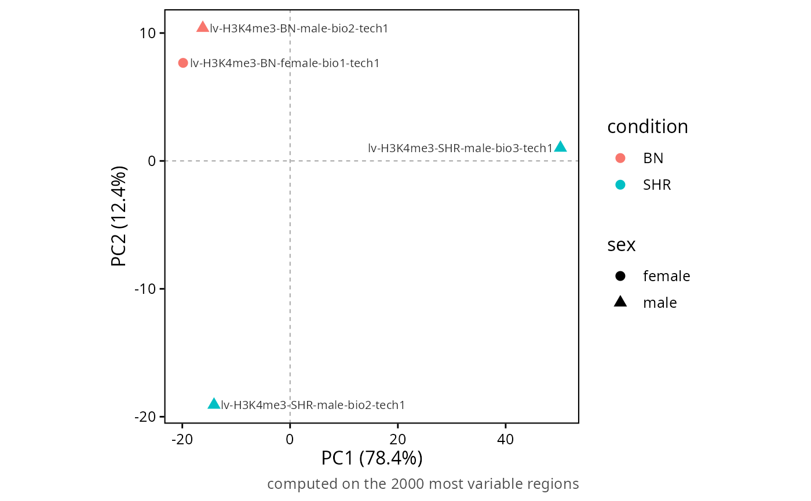
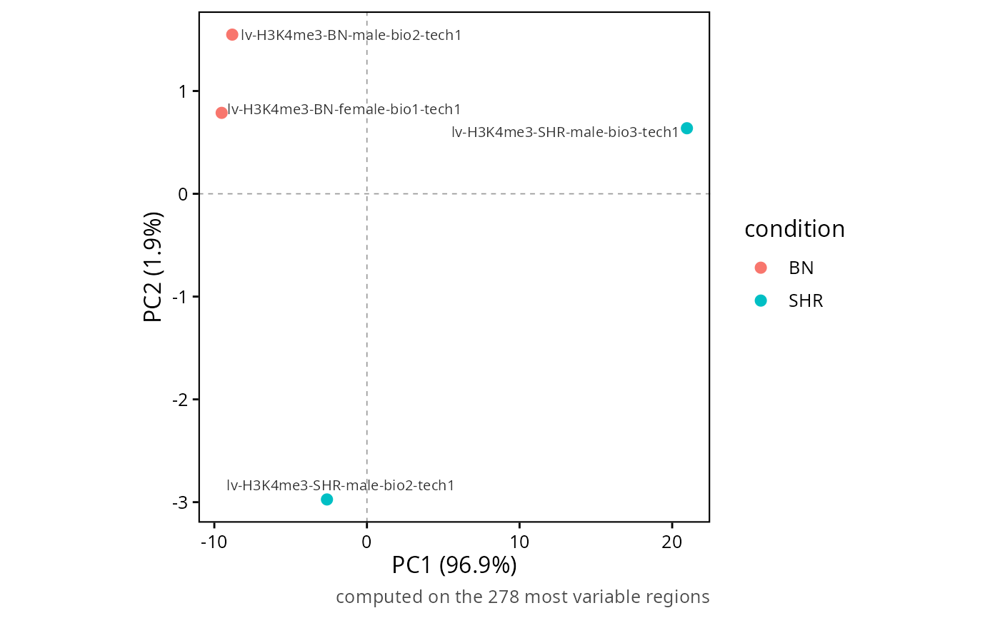

Places the samples on the first principal components of the region signal, which is the fastest way to see whether the conditions separate, whether the replicates pair, and whether either of those is really the sequencing depth in disguise.
Usage
plotRegionPCA(
object,
set = NULL,
contrast = NULL,
colourBy = NULL,
shapeBy = NULL,
labelBy = "sample",
useOffsets = TRUE,
compareOffsets = FALSE,
facetBySet = FALSE,
dimensions = c(1, 2),
topRegions = 2000,
pointSize = 3,
colours = NULL,
title = NULL,
subtitle = NULL,
legendPosition = "right",
baseSize = 12
)Arguments
- object
RegionSetDE.counts,RegionSetDE.fitor any result object of the package.- set
Character vector with the names of the region sets used. Default:
NULL, all of them.- contrast
String with the name of a contrast, or its position, when
objectholds several of them. Default:NULL.- colourBy
String with the name of a
colDatacolumn driving the colour. Default:NULL.- shapeBy
String with the name of a
colDatacolumn driving the shape. Default:NULL.- labelBy
String with the name of a
colDatacolumn written next to the points, or"sample". Default:"sample".- useOffsets
Logical value to indicate whether the normalisation stored in the object must be applied. Default:
TRUE.- compareOffsets
Logical value to indicate whether the same ordination must be drawn twice, once with the normalisation and once on the library sizes alone. Default:
FALSE.- facetBySet
Logical value to indicate whether each region set must get its own ordination. Default:
FALSE.- dimensions
Numeric vector of length two with the components drawn. Default:
c(1, 2).- topRegions
Numeric value with the number of most variable regions the ordination is computed on. Default:
2000.- pointSize
Numeric value with the size of the points. Default:
3.- colours
Named character vector with the colours. Default:
NULL.- title
String with the title of the plot, rendered as markdown. Default:
NULL.- subtitle
String with the subtitle of the plot, rendered as markdown. Default:
NULL.- legendPosition
String with the position of the legend. Default:
"right".- baseSize
Numeric value with the base font size. Default:
12.
Value
A ggplot object, carrying the coordinates and the variance explained as the pca attribute, in the x.variance and y.variance columns. The variance explained is written on the axis titles when a single panel is drawn, and in the panel labels when there are several, since every panel recomputes its own components.
Details
compareOffsets is the argument worth using. Scaling factors estimated outside the object, from a spike-in or a greenlist, impose a grouping of their own, and when that grouping happens to match the replicates it is indistinguishable from a batch effect until the two ordinations are put side by side. A separation that survives the normalisation being removed is in the data; one that appears only with it is the factors writing themselves into the ordination, and blocking on it would be blocking on an artefact.
The regions are the same in both panels, chosen once by variance on the normalised values, so what differs between them is the transformation and not the selection. Restricting to the most variable rows is what makes an ordination read the structure rather than the depth, and topRegions controls how aggressively.
Marks and assays should not share an ordination any more than they share a model. Split with splitSamples first, or use facetBySet when the sets themselves are the question.
Examples
counts <- loadExampleData("counts", verbose = FALSE)
counts <- normalizeCounts(counts, method = "background", verbose = FALSE)
#> calcNormFactors has been renamed to normLibSizes
plotRegionPCA(counts, colourBy = "condition", shapeBy = "sex")

# Restricted to one set, which is where the strain effect should show
plotRegionPCA(counts, set = "promoterCpG", colourBy = "condition")
